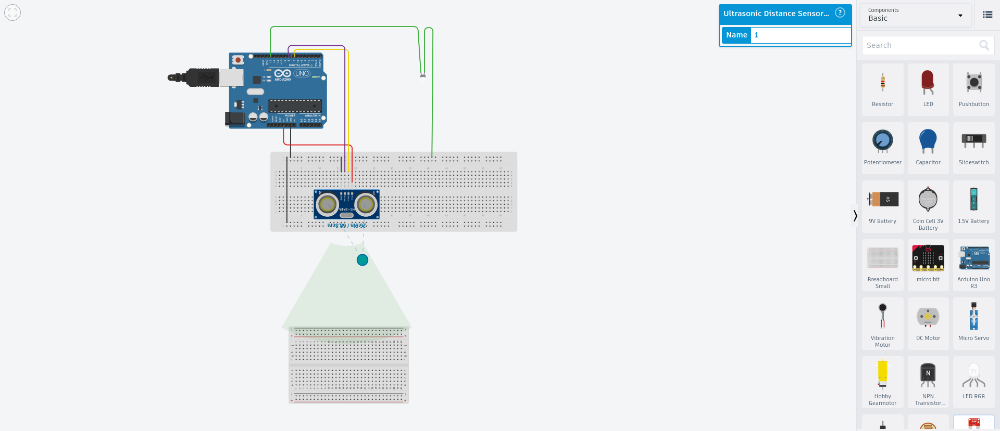

This project demonstrates how an Arduino can measure distance using an ultrasonic sensor (e.g. HC-SR04) by timing the echo of a sound pulse. The experiment focuses on digital timing, signal interpretation, and simple embedded control logic.

The Arduino sends a short trigger pulse to the ultrasonic sensor. The sensor emits an ultrasonic burst and raises the echo pin HIGH for the duration of the round-trip travel time.
The pulse width is measured using pulseIn() and converted into distance:
distance (cm) ≈ duration (µs) / 58
This experiment was developed and tested using Tinkercad Circuits, which allows full simulation without physical hardware.
🔗 Open the Tinkercad Ultrasonic Distance Simulation
pulseIn() provides microsecond-resolution timingSerial.print() due to AVR limitationsThis project is intentionally simple and transparent. It demonstrates a complete sense → compute → act loop and highlights common constraints encountered in embedded systems programming.